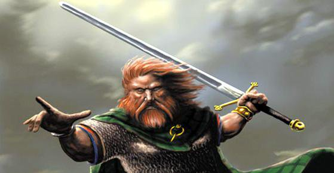
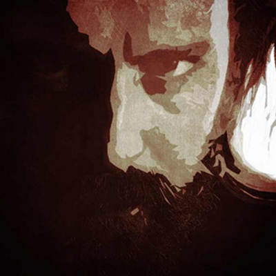
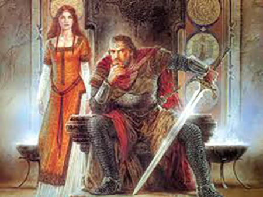

Sigtrygg Silkbeard
King of Dublin
Sitric Silkenbeard was a Hiberno-Norse king of Dublin. His father, Amlaíb Cuarán (d.981), was of Viking ancestry while his mother, Gormlaith (d.1030), was Irish and belonged to the ruling dynasty of Leinster. Sitric probably became king of Dublin in 989 and though there were several interruptions, he enjoyed a very long reign until he abdicated in 1036. The Annals tell us that he died in 1042.
Brought up in a noble household, Sitric ruled over a Dublin that was becoming a vibrant urban centre in the Viking mold, with a thriving market and a highly lucrative overseas trade. In fact the first coins minted in Dublin bore his image.
A world of war

During his reign he frequently came into conflict with both Irish and other Norse kings around Ireland, including Mael Sechnaill and Brian Boru. After a major defeat in 999, Sitric submitted to Brian’s overlordship, to the extent that he took Brian’s daughter Slaine as his wife.
Though Irish-born, Sitric would naturally have gravitated to his Norse kinsmen, with strong family ties and alliances among the noble houses of Scandinavia, Scotland, England and beyond.
These sources of help may have bolstered him when he rebelled once more against the alliance of Brian Boru and Mael Sechnaill, a rebellion which ultimately lead to the final showdown at the Battle of Clontarf.
Early in 1014, possibly at the instigation of his mother Gormlaith, Sitric travelled as far afield as the Orkney Islands and the Isle of Man, seeking support from the Norse leadership there in a major push against the rule of Brian Boru.
Later Life
Sigtrygg's long reign spanned 46 years, until his abdication in 1036.[4] During that period, his armies saw action in four of the five Irish provinces of the time. In particular, he conducted a long series of raids into territories such as Meath, Wicklow, Ulster, and perhaps even the coast of Wales. He also came into conflict with rival Norse kings, especially in Cork and Waterford.
He went on pilgrimage to Rome in 1028 and is associated with the foundation of Christ Church Cathedral in Dublin. Although Dublin underwent several reversals of fortune during his reign, on the whole trade in the city flourished. He died in 1042.
More photos